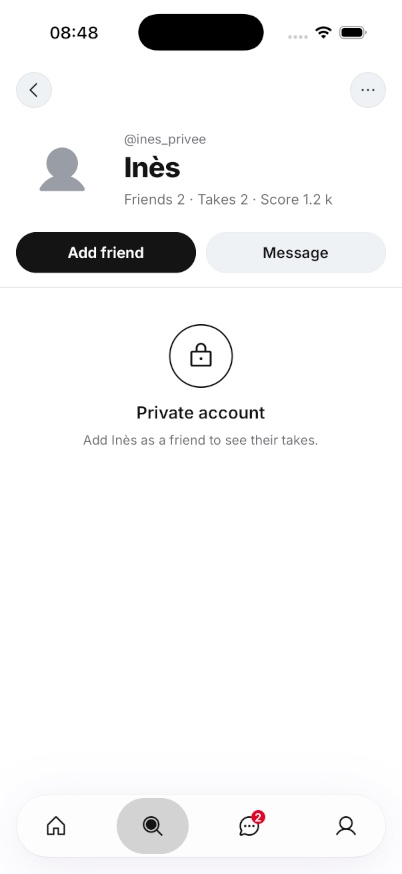
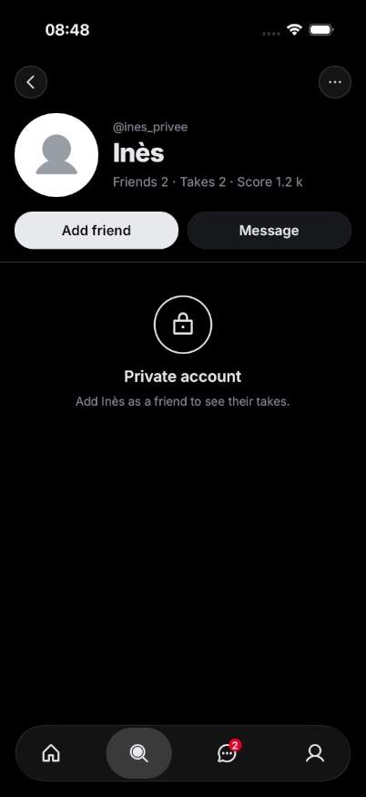
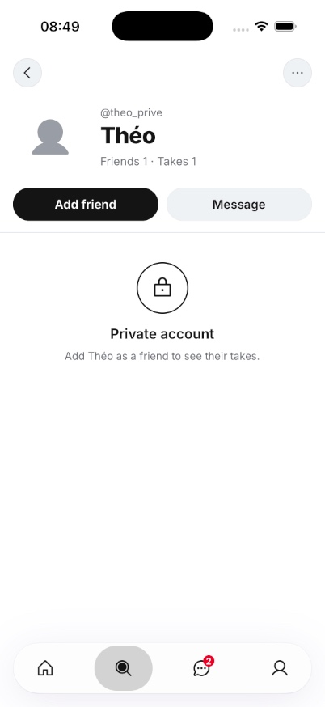

<!doctype html>
<html lang="fr">
<head>
<meta charset="utf-8">
<meta name="viewport" content="width=device-width,initial-scale=1,viewport-fit=cover">
<meta name="robots" content="noindex,nofollow">
<meta name="theme-color" content="#F3F6FB" media="(prefers-color-scheme: light)">
<meta name="theme-color" content="#0F1420" media="(prefers-color-scheme: dark)">
<title>Profil privé</title>
<link rel="preconnect" href="https://fonts.googleapis.com">
<link rel="preconnect" href="https://fonts.gstatic.com" crossorigin>
<link rel="stylesheet" href="https://fonts.googleapis.com/css2?family=Nunito:wght@600;700;800;900&display=swap">
<style>
:root{
  --bg:#F3F6FB;--surface:#FFFFFF;--ink:#141B2D;--muted:#55607A;--line:#DCE3EF;--line-2:#C6D0E2;
  --ok:#21995A;--ok-ink:#16653B;--brand:#2A5BD7;
  --sans:"Nunito","Avenir Next","Segoe UI",system-ui,sans-serif;color-scheme:light;
}
@media (prefers-color-scheme:dark){:root{
  --bg:#0F1420;--surface:#18202F;--ink:#EEF2FA;--muted:#A5B0C6;--line:#2A3446;--line-2:#3A4659;
  --ok:#42BE7C;--ok-ink:#93E2B7;--brand:#7FA2F5;color-scheme:dark;
}}
*{box-sizing:border-box}
body{margin:0;background:var(--bg);color:var(--ink);font-family:var(--sans);font-size:17px;line-height:1.4;font-weight:600;-webkit-font-smoothing:antialiased}
main{max-width:760px;margin:0 auto;padding:calc(18px + env(safe-area-inset-top,0px)) 16px calc(40px + env(safe-area-inset-bottom,0px));display:flex;flex-direction:column;gap:18px}
h1{margin:0;font-size:28px;font-weight:900;letter-spacing:-.02em;line-height:1.15;text-wrap:balance}
h2{margin:8px 0 0;font-size:20px;font-weight:900}
p{margin:0;color:var(--muted);font-size:15px}
.cartes{list-style:none;margin:0;padding:0;display:flex;flex-direction:column;gap:10px}
.carte{background:var(--surface);border:2px solid var(--line);border-radius:16px;box-shadow:0 3px 0 var(--line-2);padding:12px 14px;display:flex;flex-direction:column;gap:4px}
.endroit{font-weight:900}
.chiffres{display:flex;flex-wrap:wrap;align-items:baseline;gap:6px;font-size:18px}
.avant{color:var(--muted)}
.apres{color:var(--ok-ink);font-weight:900}
@media (prefers-color-scheme:dark){.apres{color:var(--ok)}}
.gain{margin-left:auto;font-weight:900;color:var(--ok-ink)}
@media (prefers-color-scheme:dark){.gain{color:var(--ok)}}
.genre,.note{color:var(--muted);font-size:13px;font-weight:700}
</head>
<body>
<main>
<h1>Profil d'un compte privé : Amis, Takes et Score</h1>
<p>Ton retour sur TestFlight 196 : sur un profil privé comme celui d'Inès, on ne voyait que le nombre de Takes. Tu voulais aussi le score, s'il y en a un, et le nombre d'amis, comme partout. Seuls les chiffres sont montrés : les listes restent cachées tant qu'on n'est pas amis.</p>
<p>Ce que j'ai trouvé : avant, l'app ne demandait aucun chiffre pour un compte privé. La ligne montrait seulement ce qui traînait en mémoire, d'où les Takes seuls chez toi. Maintenant, les trois chiffres sont demandés au serveur. Un compte bloqué voit toujours 0 partout.</p>
<div class="grille">
<figure><figcaption>Inès, en clair : Amis 2 · Takes 2 · Score 1,2 k</figcaption></figure>
<figure><figcaption>Inès, en sombre</figcaption></figure>
<figure><figcaption>Théo, sans score : Amis 1 · Takes 1</figcaption></figure>
</div>
<p>Captures faites par la machine sur ses comptes de test, avec l'app en anglais. En français, ce sera « Amis », « Takes » et « Score ». Où ça en est : deux relectures sont en cours, centrées sur la vie privée et sur l'anonymat (un Take publié en anonyme ne doit jamais compter dans ce chiffre). La CI tourne aussi. Je ne fusionne qu'avec ton accord sur ces captures.</p>
</main>
</body>
</html>
